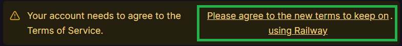
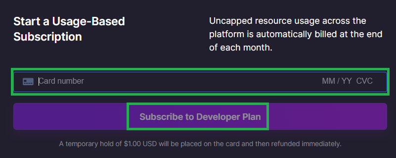
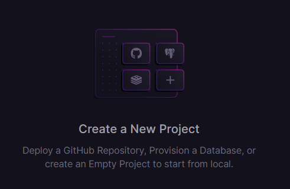
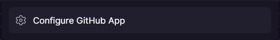
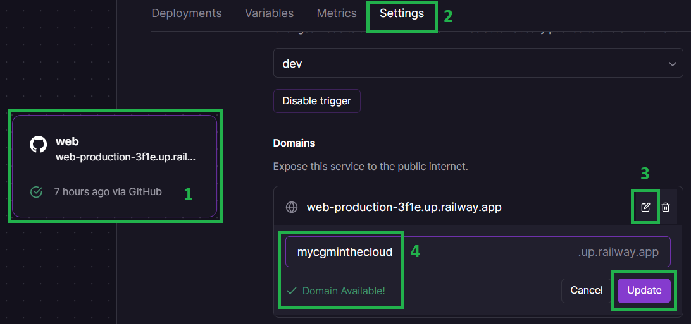
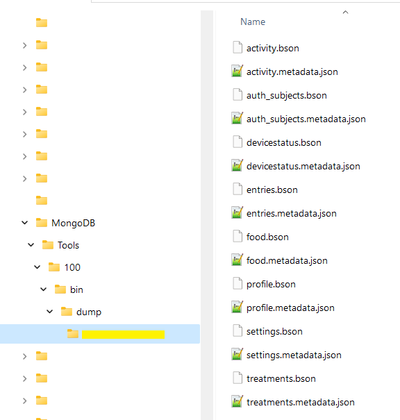
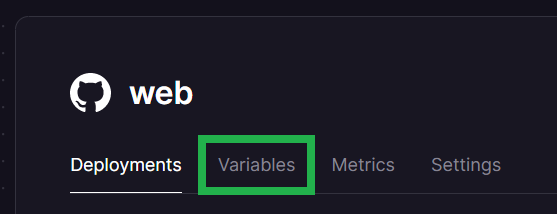

Railway Nightscout⌁
Method 2: using the help page
APPLIES TO:
Cost
You can create your Railway Nightscout site for free (using a MongoDB Atlas database) by subscribing to a Developer plan. You will need to add a credit card to your Railway account but since Nightscout usage will remain below the free 5$ threshold per month, you will not be billed.
Keep in mind a free M0 MongoDB Atlas database size is limited to 512MB and you will eventually need to perform cleanup, make sure you add dbsize in enable to avoid unexpected Nightscout failure. You can increase database size with an M2 shared cluster the additional cost is 9$ per month.
Database
Adding a Railway MongoDB database to your Railway account will eventually generate costs.
The Developer plan offers Max 100 GB of Disk (Soft cap) but mind the cost $0.000231 / GB / Minute will quickly reach 5$ for a 512MB database.
Consider Nightscout as a service as an option.
Set up a new Nightscout⌁
Create your Railway and GitHub accounts from a computer.⌁
Note
Do not change device/computer/browser during the setup process!
If you have unexpected issues when creating your site, restart with another browser.
Step 1: Create a GitHub account and fork cgm-remote-monitor⌁
If you don't have a GitHub account follow this link to create one and come back.
Follow this link this link to fork the Nightscout cgm-remote-monitor project into GitHub, once done proceed to step 2 below.
Step 2: Create a Railway account⌁
a) Open Railway in a new browser tab and click login. Login with GitHub.

b) If the following screen shows-up, select Authorize Railway App.

c) Click on Please agree to the new terms to keep on using Railway.

d) Scroll down and click I agree with Railway's Terms of Service.

e) Scroll down and click I will not deploy any of that.

f) You should now see this. You've created your Railway account.
If it still shows 200 hours, refresh your browser page.
g) You need to use Nightscout for more than 500 hours per month: upgrade your account to a Developer plan. Click on the Starter Plan information and select Remove Resource Limits.

Enter your credit card information and select Subscribe to a Developer Plan.

Your card will be billed 1$ that will be refund immediately. Bank fees won't be refund.
One-off purchase
If you are reluctant to leave a billing method to Railway, you can opt for a one-off 5$ purchase guaranteeing you access to a Developer plan until this credit will be used (which is also an insurance against seeing your site stop unexpectedly).
No billing will occur after the initial credits are fully used. They will transfer month to month with no known limit in time.
Step 3: Create your database⌁
Already have a database?
If you're migrating from another platform and you already have database connection string from another Nightsout deployment, just copy the MONGODB_URI or MONGO_CONNECTION string and keep your data!
You have two choices.
-
You can create a new MongoDB Atlas database.⌁
Costs
Recommended for a free Nightscout site.
To create a new MongoDB database follow these instructions and come back with your MONGODB_URI connection string.
The Atlas database size is limited to 512MB of data and is free to try. This might evolve in the future.
-
You can create a new Railway Mongo database.⌁
Costs
Adding a Railway Mongo database will not fit forever in 5$ per month.
If you don't keep its dimension very small (<200MB) you will most probably be charged for it.
a) Click New Project from your Dashboard screen (top right).

b) Click Provision MongoDB

c) Select your new MongoDB project.
d) Go to the Connect page.

e) Move the mouse to the end of the line showing the Mongo Connection URL and click the copy icon.
This is an important information
Now that you have copied the resulting MONGODB_URI string, keep it in a safe place, you will need it later.
Step 4 - Deploy Nightscout in Railway⌁
a) Click on Create a New project.

If you don't see that, top right, click + New Project.

b) Select Deploy from GitHub repo.
c) Select Configure GitHub App.

d) Choose Only select repositories, in the Select repositories drop-down select your own fork of cgm-remote-monitor.
Then, at the bottom, click Install & Authorize.

e) You should be back to Deploy from GitHub repo, select it.
f) Now you can select your own GitHub repository.

g) Select Add variables.

h) The Nightscout project will deploy in the background, just ignore it: now we need to setup our Nightscout variables.
Click on Raw Editor.

The raw editor will open, leave it like this for now.

i) Open the helper page in a new browser tab.
File all necessary fields, click on the Validate button at the bottom of the form, if no error is seen you will have all variables displayed in the text box at the bottom, click on the Copy All button.

j) Return to the Railway Raw editor. Paste the result. Click Update Variables.

Your site will redeploy, wait until redeploy completes.
Congratulations. You created your new Nightscout site with Railway.
Click the site name to open Nightscout.

Change Railway site name
You should change your Railway site name now in order to make it easier to remember. Recommended.
You can also do this later, before setting your uploaders.
k) Your Nightscout site should open and direct you to a new profile creation.

l) Setup your Time zone and eventually all other fields. Do not leave any fields empty. If you don't know which value to use, just use the default value. You can change these values later at any time.

m) Browse down to Authentication status and click Authenticate. Enter your API secret. Click Update.

n) Click Save.

o) If the following pop-up shows up click OK, and check status (upper right of the window).

p) If you need to modify your profile after this, authenticate with the lock icon (top right of the page): enter your API secret. Then click on the hamburger menu and select Profile Editor.
Privacy warning
Anyone with access to the URL of your Nightscout site, can view your BG and run reports of your data. It it strongly recommended that you enable security to your site once you're done with the setup.
q) Dexcom Share users should see data flowing in after some minutes. xDrip+ users (including Medtronic CareLink followers) should setup the uploader as shown here. xDrip4iOS users here. AAPS and Loop: consult the relative documentation.

Change your Railway Nightscout site name⌁
Railways automatically makes a name when creating your new site. It is rather difficult to remember.
You can change the site name but need to keep the .up.railway.app domain.
-
Select your Nightscout app
-
Go in
Settings -
In
Domainsgo to the end of line and click the edit icon -
Write your new name and check it's available
Click Update
Your Nightscout URL will now be https://yoursitename.up.railway.app

Change all your uploaders and follower devices to reflect the new URL once verified correct functioning of your Nightscout site.
Migrate your MongoDB Atlas database to Railway⌁
Not an easy operation
This is not an easy operation and requires command line instructions using a computer.
You can have a trusted person help you perform it, if you can provide both MongoDB Atlas and Railway MongoDB connection strings.
a) Dump your Atlas database
-
Follow these instructions.
-
Make sure you renamed your exported database folder to
testas this is the default database name in Railway.
b) Copy your Railway database connection string
- Select your MongoDB database
- Click on
Connect - Click on the Copy icon
c) Rename the database dump folder (example for Windows below) to test (default)

d) Import your Atlas database in Railway
- Open a command line utility (CMD, Terminal, ...) and make your way to the utility folder (if you don't want to include it in your system path). For example in Windows 64bits it's in
C:\Program Files\MongoDB\Tools\100\bin.
Type a new command starting with: mongorestore --uri followed by the database string you copied above in b)3., run it.
e) Wait until the import completes. You will see a line like this before returning to the command prompt.
2022-09-11T09:49:35.331+0200 456003 document(s) restored successfully. 0 document(s) failed to restore.
The number of documents will be different but the rest should be identical.
You have completed database restore.
If you're migrating your database, make sure to update the MONGODB_URI variable string to the new URI as copied in b)3..
Refresh your Nightscout browser once deployment completes view to verify data has been imported correctly.
Editing Variables in Railway⌁
Method 1 - Web interface⌁
This is recommended when you only need to edit or add few variables.
a) Open Railway and click login. Login with GitHub.
b) Select your Nightscout project.

c) Select your web app.

d) Click on Variables.

e) You can perform various operations on your variables:
- Add a new variable with
+ New Variable - View the variable value with
Show Value - Edit or delete the variable or its value with the line end menu

Note that each variable modification will redeploy your project.
Method 2 - Raw Editor⌁
This is recommended when you must perform lots of changes to avoid multiple project redeploys.
a) Open Railway and click login. Login with GitHub.
b) Select your Nightscout project.
c) Select your web app.
d) Click on Variables.
e) Click on RAW Editor top right

f) You can access all your variables in a text editor, each line contains the variable name, the sign = then its corresponding value.
VARIABLE=value
Perform all your changes taking care of uppercase and lowercase information and click Update Variables when finished.

Once saved your project will redeploy.
If deploy fails, check your modifications...